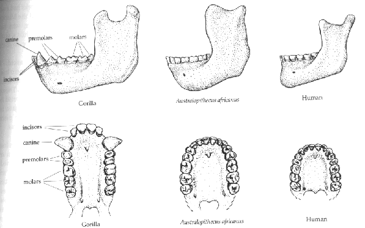

Dents et mâchoires

Les dents des australopithèques sont similaires à celles des humains. Les molaires sont similaires, bien que plus grandes. Elles n'ont pas les grandes dents canines des singes, et la mâchoire a la forme parabolique des mâchoires humaines, plutôt que la forme rectangulaire des mâchoires de singes.
L'étude des fossiles humains et de singes modernes dans les années 1950 a permis à Le Gros Clark d'établir une liste de onze différences constantes entre les humains et les singes. En examinant Australopithecus africanus et A. robustus, les seules espèces d'australopithèques connues à l'époque, il a constaté qu'elles étaient humaines plutôt que simiennes pour chaque caractéristique (Johanson et Edey 1981).
Jugé selon les mêmes critères, A. afarensis se situe quelque part entre les humains et les singes, et peut-être plus proche des singes.
Cette illustration provient de "Humankind Emerging", édité par Bernard Campbell.
Cette page fait partie de la FAQ sur les fossiles d'hominidés de l'Archive TalkOrigins.
Page d'accueil |
Espèces |
Fossiles |
Créationnisme |
Lectures |
Références
Illustrations |
Nouveautés |
Retours |
Recherche |
Liens |
Fictions
http://www.talkorigins.org/faqs/homs/jaws.html, 04/28/97
Copyright © Jim Foley
|| Email me